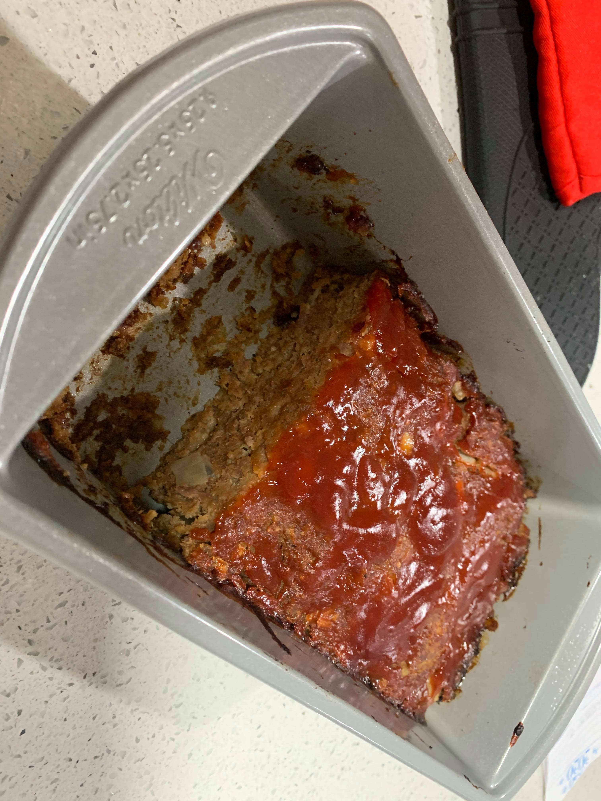

Meatloaf

Ingredients:
Meatloaf:
- 1 lb 90% Lean ground beef
- 1 cup Bread crumbs
- 1 small Onion or 1/2 large Onion, diced
- 1/2 cup Milk
- 1 Egg, beaten
- 2 tbsp Ketchup
- 1 tbsp Worcestershire sauce
- 1 tsp Dried parsley
- 3/4 tsp Salt
- 1/2 tsp Garlic powder
- 1/4 tsp Pepper
Topping:
- 1/4 cup Ketchup
- 2 tbsp Brown sugar
- 1 tbsp Red wine vinegar
Instructions:
- Preheat oven to 350 degrees Fahrenheit.
- In a large bowl, add the meatloaf ingredients and mix together until thoroughly combined.
- Add the meat mixture to a loaf pan. Pat the meat down into an even layer.
- In a small bowl, add the topping ingredients and stir to combine. Pour the sauce on top of the meatloaf and spread it into an even layer.
- Bake uncovered for 55 minutes.
- Let the meatloaf rest for 8-10 minutes before serving to ensure it does not fall apart.